30天鐵人賽介紹 AWS 雲端世界 - 15: EC2的網路負載平衡服務 Elastic Load Balancing(ELB)
What is Elastic Load Balancing
Elastic Load Balancing(ELB)是提供 EC2 或是後面會介紹到的 可在多個目標(例如Amazon EC2 執行個體、容器與IP 地址) 之間自動分配傳入的應用程式流量。它可以在單一可用區域或跨多個可用區域處理您應用程式流量的各種負載。
Classic Load Balancer
可串聯 EC2 Instance 提供基本負載平衡的功能
Application Load Balancer
適合用來處理 HTTP 與 HTTPS 流量的負載平衡，可適用於一般 EC2 Instance或是微型服務與容器方式運行的服務，以提供進階請求路由功能。Application Load Balancer 在網路的應用層 (Layer 7 - application layer)運作。
Network Load Balancer
提供極高效能的情況下處理 TCP 流量的負載平衡。Network Load Balancer 在連線層 (Layer 4 - transport layer) 運作，可將流量路由到 Amazon Virtual Private Cloud (Amazon VPC) 內的目標。
這邊有提到不同的網路層，從ISO的OSI定義的網路七層(Layers in the OSI and Internet Models)來看不同網路層提供的網路負載平衡各有優缺點，但簡單來說越偏向上方第七層的負載平衡器可以提供更多 CPU 運算的能力與彈性，而越偏向下方第四層的負載平衡器則是可以針對IP與封包做出有效的分流。

像是我們常見的 Load Balancers 都趨向用連線層 (Layer 4 - transport layer)運作，好處是比較容易透過區分與實作，基本上就是用一個Load Balancers建立一個 pool ，此 pool 會有一個對外 IP ，所有request 透過此 inbond IP 得到回應。而每個 instance 個別 IP 位置則指向此 pool 內做管理，由 Load Balancer 做分配。由於是較為底層的協定所以能做的通訊協定只要基於 UDP、TCP等都可以實作。

而使用應用層 (Layer 7 - application layer)運作的 Load Balancers 則可以提供我們更多的功能，能從路由來源直接給予特殊的規則指派，如反向代理功能(reverse proxy)。

更多細節可以參考WHAT IS LAYER 7 LOAD BALANCING?與WHAT IS LAYER 4 LOAD BALANCING?。
Hands on Lab
今天將會建立兩個 Linux + Apache 的網路伺服器，再透過 ELB Classic Load Balancer將兩個串連起來並透過 ELB 的 DNS 接出去給外面做使用。
Create EC2 Instance for Linux + Apache
首先我們先快速的建立一個獨立的 Linux + Apache EC2 Instance
先登入 AWS Console
然後在中間的輸入框查詢 EC2 ，或是透過左上角的 Services 點選到 Compute 下的 EC2 服務。
接著我們按照先前的範例先建立一個 Instance 裝載 apache 可以服務一個簡單的網頁，這邊我們改用 Linux 環境為範例：
這邊挑選一個指定的AZ，並額外給予 Tags(這在之後的 CloudWatch 可以協助我們看整體花費的比例):
這邊我們設定 80、443給網站使用，並開放 22 port 做 ssh，而這邊如果打上 0.0.0.0/0 表示全開，所以會有警告：
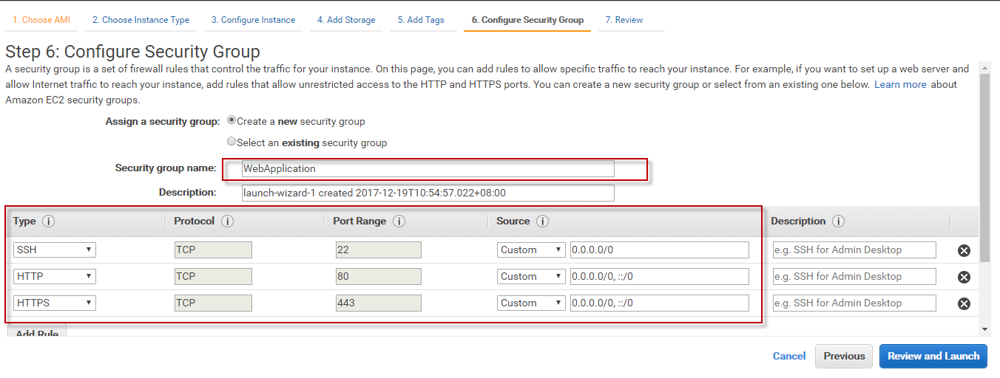
在登入後使用管理者權限做操作更新當前的套件：
sudo su
yum update -y
接著我們安裝 apache ，並且設定 index.html 做為網站起始頁面:
yum install httpd -y
完成上述步驟記得將 httpd 服務呼叫起來:
service httpd start
Create ELB for EC2 instance
這邊我們一樣從 EC2 頁面左側的 Load Balancers 新增一組 Application Load Balancer：
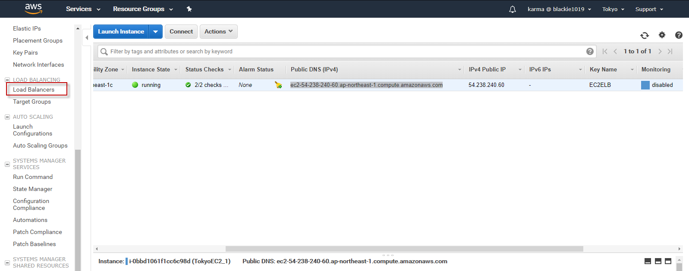
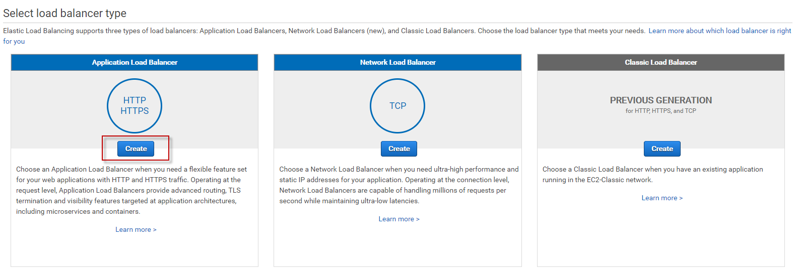
首要要給這個 Load Balancer 我們需要處理的 port 與啟用的 AZ :
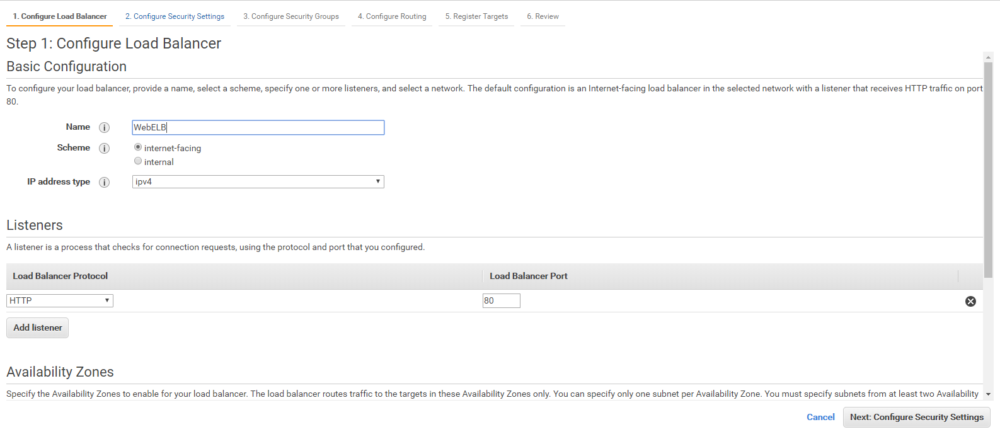
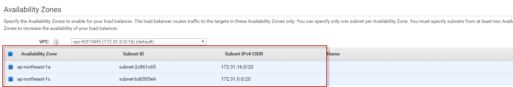
而如果我們有 80 port 則會跳出以下警告提醒我們改用 HTTPS:
接著加入先前設定的 EC2 Instance:
這邊設定 Routing 以及 Health Checks 的規則，稍後我們會回去 EC2 建立該頁面:
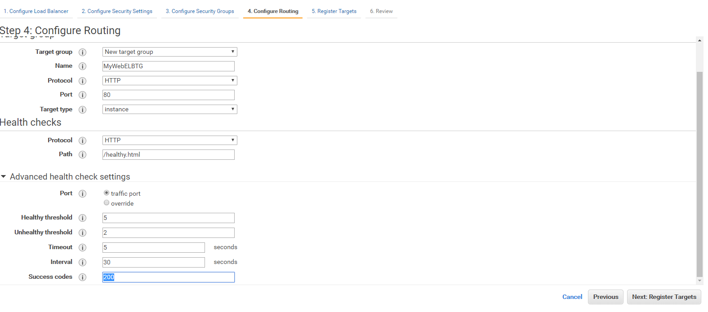
不要忘記將Target 加入上方 Registered targets當中：
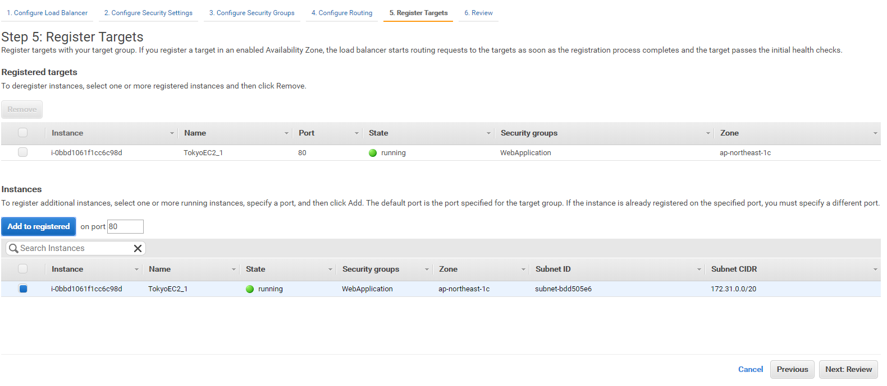
最後確認無誤後即可從 ELB 對外的 dns 看到整個網站已經成功被加入：
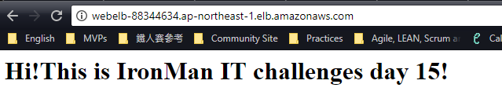
Add healty.html for healthy check
而這邊為了之後的 ELB healthy check功能我們新增一個 healty.html 網頁：
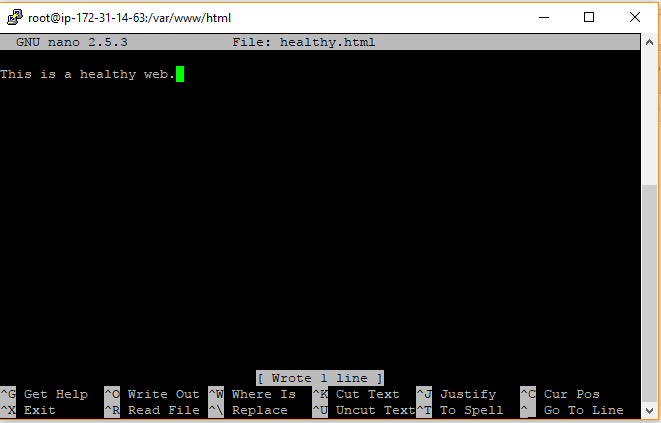
這邊要稍微注意如果使用 ELB 但healty.html 失效或被移除則該服務的 EC2 Instance 會被認為服務異常而將整個 Instance 移除當前的 Load Balancer pool 裡面，直到 healthy check 的狀態恢復正常。
Windows use putty login EC2
這邊提一下如何在 Windows 使用 SSH 登入，通常我們從 EC2 可以下載 .pem 檔案，而這邊我們必須使用 PuttyGen 轉換成 .ppk 檔案後才透過 Putty 做為登入的金鑰：
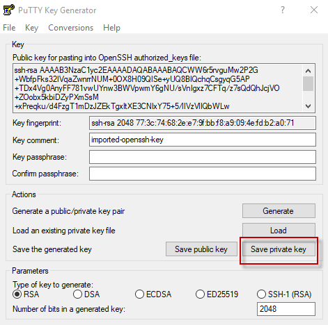
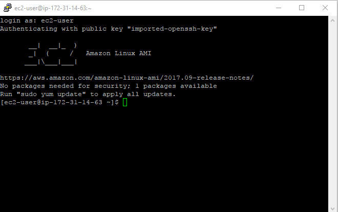
而這邊建議設定連線時要帶入 ec-2-user@